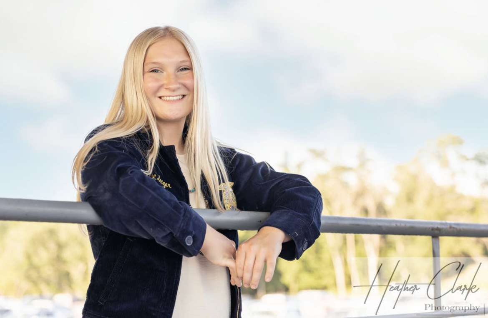
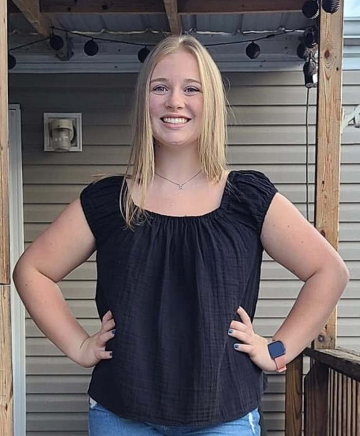
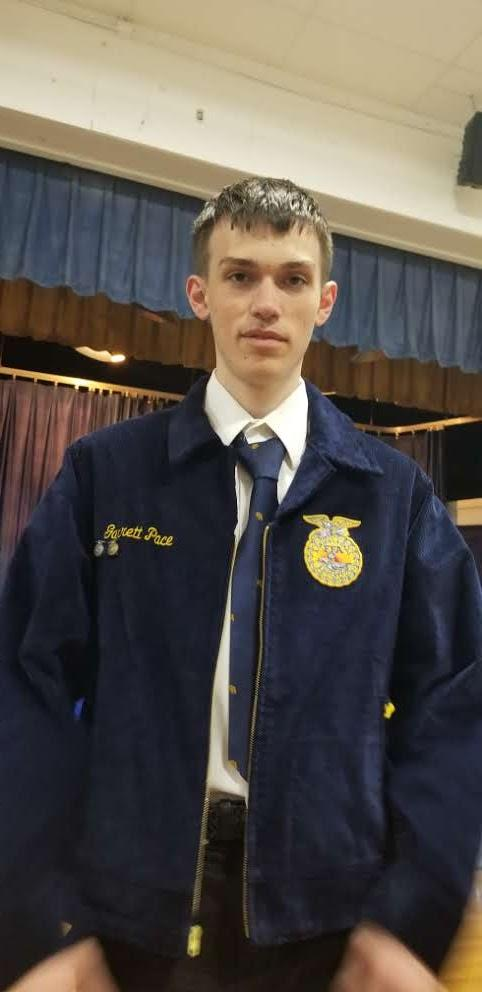
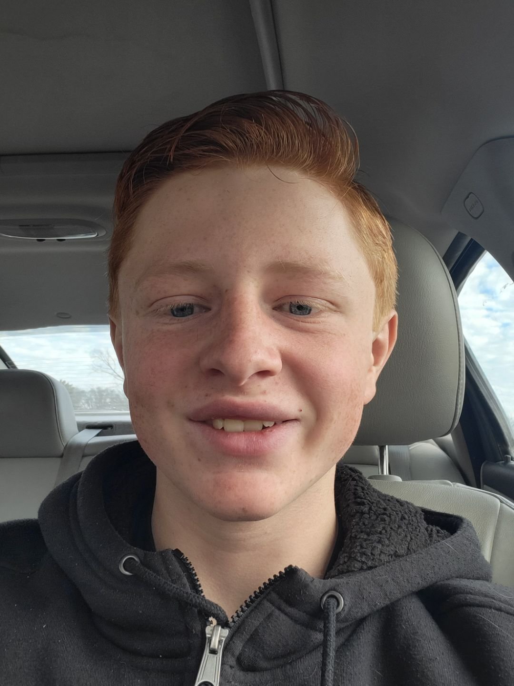
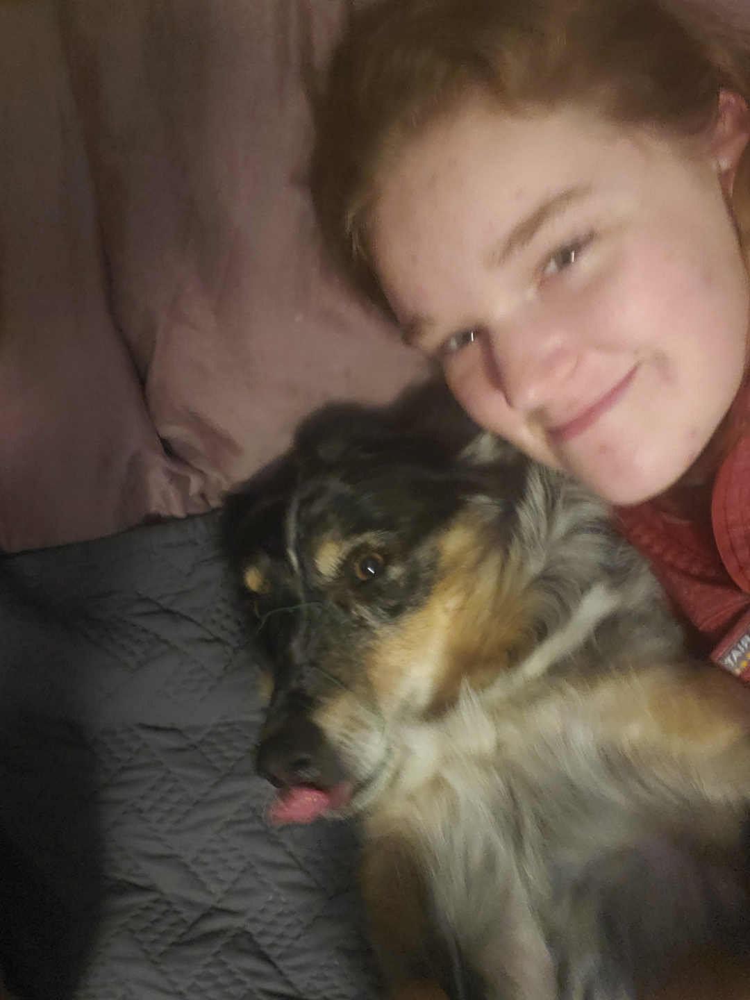

<!DOCTYPE html>
<html lang="en">
</html>
<head>
<style>

	#container {font-style:Verdana, Geneva, sans-serif;
		font-size:18px;
		color:white;}
	body {background-color: #036;}
	.div2{clear:left; margin-top:10px}
	.div3{clear:left;margin-top:10px}
	.div4{clear:left; margin-top:10px}
	.div5{clear:left; margin-top:10px}
	.div6{clear:left; margin-top:10px}
	header {background-color: #036;
		padding:10px;
		color:white;}
	nav {background-color: #036;
		padding:10px;
		color:white;
		height:75px}
	nav ul {list-style-type:none;
			margin:0;
			padding:0;}
	nav li {display:inline;
			padding-right:75px;
			color:white;
			font-size:15px;}
	nav li a {text-decoration:none;
				color:white;}
	nav a:link {text-decoration:none;
				color:white;}
	nav a: visited {text-decoration:none;
					color:white;}
	nav a:hover {text-decoration:underline;}
		padding:10px;
		color:white;}
	h1 {font-size:30px;
		color:#09f;}
	.center {
		display: block;
		margin-left: auto;
		margin-right: auto;
		width: 50%;
		height:200px}
</style>
</head>
<body>
<header>
<a href="ChapterWebsite.html"></a>
</header>
<nav>
<ul class="center"><li><a href="ChapterWebsite.html" target="_blank">Home</a></li>
<li><a href="CalenderofEvents.html" target="_blank">Calender of Events</a></li>
<li><a href="Committees.html" target="_blank">Committees</a></li>
<li><a href="Events.html" target="_blank">Chapter Events</a></li>
<li><a href="ChapterHistory.html" target="_blank">Chapter History</a></li>
<li><a href="Join.html" target="_blank">Join</a></li>
</ul>
</nav>
<div id="container"> <!-- order of power is president, vice president, Secretary, treasuer, reporter, sentinal.-->
<h2>Come and Meet the 2022-2023 Officer team</h2>
<div class="div1">
<p>
Hi, I'm Stephanie! My current SAE project is sheep marketing. I have held 3 officer positions through out high school, my sophomore year I was the reporter, junior year I was the Secretary, and I am in the middle of my senior year holding the president position! I would recommend FFA to any incoming freshman who needs help getting out of their shell!</p>
</div>
<div class="div2">
<p>
Hi, I'm Rachel Ogden and I'm a sophomore! My SAE project’s are field & turfgrass management as well as my breeding heifer. I am currently my chapter Vice President. My favorite FFA memory is being a part of the 2022 Reserve Champion State Ag Sales Team. </p> 
</div>
<div class="div3">
<p>
Hi, I'm Ashlyn. I'm currently the Secretary of the Moulton-Udell FFA Chapter. My favorite FFA memory is exploring career shows and colleges at National Convention. I would highly recommend FFA to any underclassmen interseted in learning new things, becoming a leader, and making new friends!</p>
</div>
<div class="div6">
<p>
Hi, I'm Garrett. I am currently the treasurer of the Moulton-Udell FFA Chapter. This is my senior year and my first time being a FFA officer. I was drawn to the FFA because of all the fun I saw previous members having, while only having one year as officer I have been a member for 4 years. FFA will always hold a place in my heart because of how it has helped shape me into the person I am today. I would recommend that everyone joins the FFA at some point during their highschool career and you'll be shocked how much it cna change you.
</p>
</div>
<div class="div4">
<p>
Howdy, I'm Hayden Brineagr. I am currently the sentinel of the FFA and I was the treasuer in 2021-2022. My favorite FFA activity is the coon hunt. I'd recommend FFA to any underclassmen for the leadership skills involved along with the friends you make along the way!</p>
</div>
<div class="div5">
<p>
Hello, my name is Gracie.  My current SAE is working on my family farm. I am an assistant FFA officer.  My favorite part of FFA is going to National Convention and exploring the places they had. I would recommend FFA to underclassmen who are thinking about joining because you can get out of your comfort zone and learn new skills.</p>
</div>
</body>